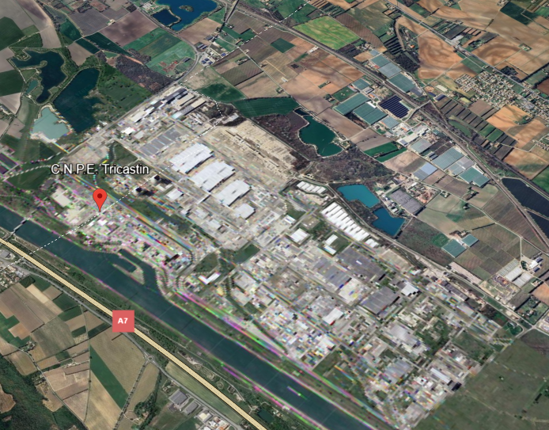

Tricastin, Frankreich -INES 1
- Das KKW Tricastin liegt etwa 100 Kilometer nördlich von Avignon.
- Nach Angaben der französischen Atomaufsichtbehörde (ASN) sind in der Nacht vom 7. auf den 8. Juli
2008 etwa 30.000 Liter uranhaltiges Wasser ausgetreten.
- Das entsprechende Auffangbecken war wegen Reparaturarbeiten nicht dicht.
- Die Konzentration in der freigesetzten Flüssigkeit betrug etwa 12 Gramm Natururan pro Liter.
- Aus diesen Angaben folgt eine Gesamtmasse des freigesetzten Urans von 360 Kilogramm - davon etwa 2,5
Kilogramm Uran-235. Die Flüssigkeit ist in den Boden und in benachbarte Gewässer eingedrungen.
- Der Vorfall wurde seitens der Behörde als INES 1
eingestuft.
- Es gab keine Folgen auf die Zivilisation oder die Umwelt.
